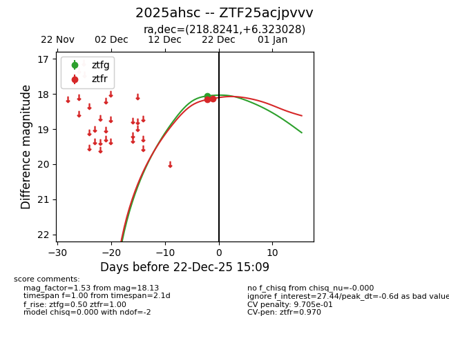
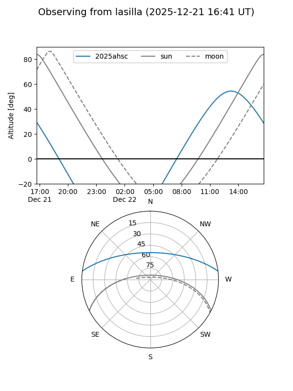
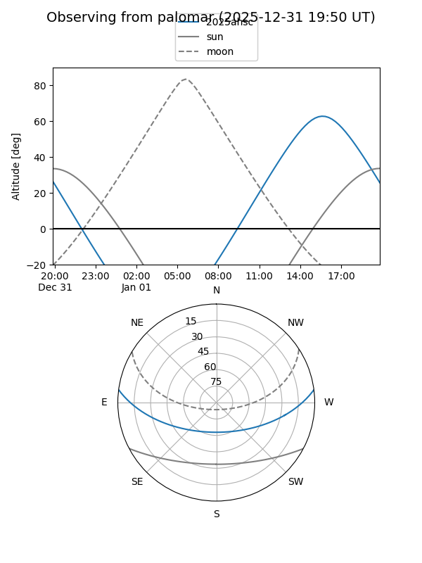
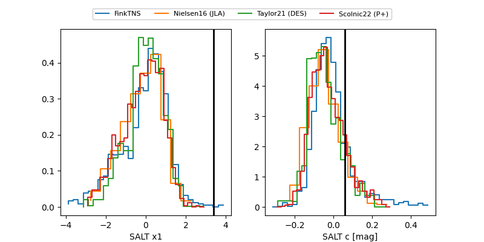

2025ahsc
Target 2025ahsc at 2025-12-31 17:00
Aliases and brokers:
FINK:
Lasair:
ALeRCE:
TNS:
YSE:
alt names
ZTF25acjpvvv (ztf,fink_ztf)
2025ahsc (tns,yse)
Coordinates:
equatorial (ra, dec) = 218.8241,+6.32303
equatorial (HMS+DMS) = 14:35:17.79,+06:19:22.90
galactic (l, b) = (357.5145,+57.72642)
Flags:
likely cv
Photometry:
last ztfg=18.10, ztfr=18.29
3 ztfg, 5 ztfr detections
Lightcurve

Visibility


Additional plots
